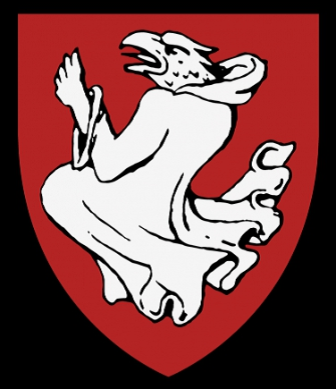

Häradshövding, Slottsfogde på Åbo slott. Blev ca 58 år.
omkring 1379. [1]
1437 Åbo, Finland. [1]
Klas Lydekesson Djäkn, död efter 1435 var en svensk häradshövding och hövitsman.
Biografi
Före årsskiftet 1400 övertog unionsdrottningen Margareta Stockholm, Åbo samt de norrländska och finska fästena. För att styra de nya områdena tog unionsmonarken män från Danmark, ofta med tyskt ursprung. Sannolikt var Klas Djäkn en av dem. Han var frälseman och han binamn Djäkn avsåg en person som hade bedrivit studier. Hans ankomst bör ha ägt rum senast år 1404, då han av släktförhållandena att döma bodde i Finland. Ännu år 1405 räknades Klas till det lokala frälset men redan år 1407 kom han närmast efter lagmannen vid olika ting i Finland. Från år 1413 nämns han som häradshövding i Masku. I landsrätten för Finland kan hans verksamhet beläggas på 1410-talet och år 1434. Möjligen år 1409 men senast 1411 var han kungens hövitsman på Åbohus. Hans verksamhet som slottsfogde är mest känd genom korrespondensen med staden Reval.
I kung Eriks närhet uppträdde Klas Djäkn i maj och juni 1425 i Köpenhamn då kungen hade återvänt från sin pilgrimsresa till Jerusalem. Under kriget med hansastäderna under kung Eriks sista tid var Klas uppgift främst att trygga handelsleden mellan Stockholm och Viborg. Den sista gången Klas förekommer i källorna är i januari 1435 då han stiftade mässor för sin och sin familjs själar att hållas i Åbo domkyrkas Vårfrukor. Han var avliden i mars 1437. Han var gift med Kristina Jönsdotter (Garp) (nämns 1435). Inte bara genom sin hustrus arv utan genom sin ställning som långvarig kunglig fogde och häradshövding skapade Klas en stor förmögenhet i gods. Hans sätesgård var Nynäs i Nousis men han byggde också upp tre stora godskomplex och förde över frälserättigheter till dem från ströegendomar. Dessa var Yläne Gammelgård i Pöytis, Koivisto i Ulvsby och sannolikt också Kankas i Masku.[1]